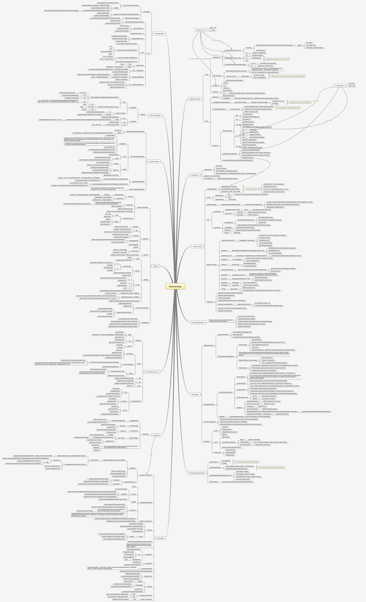

{% extends "layout.html" %}
{% block header %}
    <style>
    body{overflow-x: hidden;}
        *{
  user-select:none;
}
.wrapper{
  overflow:hidden;
}

img{
  width:100%;
}

.image-zoom-available{
  cursor: zoom-in;
}
.image-zoom-available.is-active{
  cursor: none;
}
</style>
{% endblock %}
{% block main %}
<div class="wrapper">
  
</div>
<script src="../static/zoom.js"></script>
{% endblock %}


